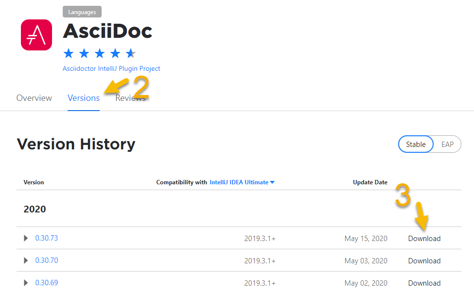
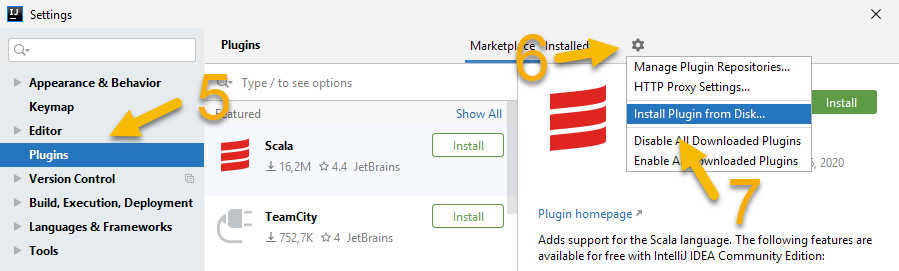

Installing the plugin
List of prerequisites and a step-by-step guide to install the plugin.
For users already familiar with JetBrains IntelliJ, there’s a Quick Start documentation. For those new to IntelliJ, there is a Setup for technical writing with a step-by-step-guide installing IntelliJ for technical writing.
Prerequisites
To use this plugin, the user of the plugin needs to have one of the IntelliJ family of IDEs like IntelliJ IDEA, GoLand, WebStorm or PyCharm installed. See below for Android Studio and IntelliJ MPS.
All default download packages include the JetBrains Runtime 11, a pre-bundled OpenJDK runtime environment. Please use the pre-bundled JetBrains Runtime to run the IDE as it proves to be the most stable.
Up to and including IntelliJ IDEA 2020.1 the pre-bundled OpenJDK includes JavaFX, which is required for a rich preview in 2020.1 and earlier.
From IntelliJ 2020.2 onward the plugin supports the JCEF browser preview that is pre-bundled in the JetBrains runtime that pre-bundled with 2020.2 and later. It uses an embedded Chrome browser with up-to-date JavaScript and CSS handling.
Starting with IDEA 2020.2, the JavaFX preview is only available after installing the plugin “JavaFX for plugins”.
If you’ve already installed the IDE and the plugin, continue to section Features of the IntelliJ AsciiDoc plugin.
If you have the IDE installed already, continue to the next section Installing the plugin.
If you are looking for a free version of the IDE, choose IntelliJ IDEA Community edition. All other IDEs require a paid subscription. You can still download them and use them with a free, time-limited evaluation subscription.
You can download them from the JetBrains homepage: https://www.jetbrains.com/idea/download/
Google Android Studio
If you use Android Studio, go ahead and install the plugin.
Afterwards: For Android Studio 4.0+, enable the JavaFX preview by upgrading the bundled JDK. For Android Studio 4.2+, enable the JCEF preview by upgrading the bundled JDK.
IntelliJ MPS
If you use MPS, go ahead and install the plugin.
Support will be limited as MPS doesn’t have all the APIs the plugin can hook into. Have a look at Troubleshooting problems when working with MPS. Please open an issue on GitHub if you want to contribute to making MPS support better.
More information on JDKs
To use the JavaFX preview instead of the Swing preview, you’ll need to run IntelliJ with 64bit Java and JavaFX installed. Starting with IntelliJ 2020.3, the JetBrains platform requires JDK 11 to run. Oracle JDK installations include JavaFX, but can make the IDE unstable and crash. OpenJDK included in a Linux distribution usually doesn’t include JavaFX.
The event more advanced JCEF preview will only work with JetBrains OpenJDK runtime.
Therefore, JetBrains OpenJDK pre-bundled with your IDE is recommended.
Read more about choosing the JDK version of the IDE in the JetBrains knowledge base entry “Selecting the JDK version the IDE will run under”.
Installing the plugin
To activate the support for AsciiDoc in the IDE the plugin, you must install the plugin. There are several possibilities to install the plugin:
Installing from JetBrains marketplace with an Internet Connection:
If your IDE doesn’t have internet access configured:
-
Download the installation archive via your browser and install it from disk.
Installation via JetBrains Marketplace via the IDE’s settings
- Prerequisite
-
This requires a working internet connection in your IDE.
- Steps
-
-
Open the IDE’s setting via .
This opens the following menu: Figure 1. Settings menu when installing from JetBrains Marketplace
Figure 1. Settings menu when installing from JetBrains Marketplace -
Select Plugins from the settings tree.
-
Select Marketplace tab if it is not selected yet.
-
Search for 'asciidoc'.
-
Click on the button Install.
-
Once the download is complete, press the button Apply and restart the IDE if there is a prompt to do so.
-
Now that the installation is complete, every AsciiDoc file opens in an editor with syntax highlighting and a preview. Continue to section Configuring the plugin to configure a user’s environment.
Installation by manually download and install-from-disk
- Prerequisite
-
This requires a working internet connection when downloading the file with a browser. If the machine where the plugin should be installed doesn’t have direct internet access, download it on a different machine with Internet access and transfer the file internally via file transfer.
- Steps
-
-
Open the AsciiDoc plugin in the JetBrains Marketplace
This opens a web page similar to the following screenshot:Figure 2. JetBrains Marketplace -
Choose the version tab if it isn’t pre-selected.
-
Download the version compatible with your IDE’s version (usually the latest version if your IDE is up-to-date).
-
Open the IDE’s setting via .
This opens the following menu:Figure 3. Settings menu when installing from disk -
Select Plugins from the settings tree.
-
Click on small gear icon.
-
Choose menu item Install Plugin from Disk….
-
Pick this ZIP-file downloaded in step 3.
-
Restart the IDE.
-
Now that the installation is complete, every AsciiDoc file opens in an editor with syntax highlighting and a preview. Continue to section Configuring the plugin to configure a user’s environment.